01Space Marine คือใคร?
Space Marine (สเปซ มารีน) หรือ Adeptus Astartes (อเดปตัส แอสตาร์ทีส) คือทหารที่ถูกดัดแปลงพันธุกรรมจนสูงกว่า 2 เมตร ด้วยอวัยวะเสริม 19 ชิ้นที่สร้างจาก gene-seed ของ Primarch แต่ละคน แล้วฝึกฝนตั้งแต่เด็ก สวมชุดเกราะ Power Armour ที่เชื่อมกับระบบประสาท ถือเป็นทหารชั้นยอดที่สุดของจักรวรรดิ แต่มีจำนวนน้อยมาก — ทั้งกาแล็กซีมีประมาณหนึ่งพัน Chapter


ความเป็นมา: Thunder Warriors (รุ่นทดลอง อายุสั้น) → Legiones Astartes 20 Legion ในยุค 30K → Chapter ละราว 1,000 นายหลัง Heresy (Firstborn) → Primaris ใน M42 อ่านเพิ่มที่ 30K vs 40K
02วิธีคัดคนและขั้นตอนการเป็น Space Marine
- เลือกดาวที่เป็นแหล่งคัดคนChapter มักคัดเด็กชายจากดาวป่าเถื่อน (Feral World) หรือแก๊งอันธพาลใน Hive World เพราะแข็งแกร่งและดุดัน Chaplain และ Apothecary คอยเฝ้าดูประชากรของดาวเหล่านี้จากระยะไกล
- บททดสอบ (Aspirant Trials)ต่างกันไปตาม Chapter เช่น ดวลเลือด ล่าสัตว์ร้าย เอาชีวิตรอดในป่า ทิ้งไว้กลางธรรมชาติที่โหดร้าย หรือทดสอบจิตใจ ส่วนใหญ่สอบตก และหลายคนตายระหว่างทดสอบ
- Neophyte (อายุราว 10–14 ปี)เริ่มฝังอวัยวะทีละขั้นควบคู่กับการฝึกและการสะกดจิต (hypno-indoctrination) หลายคนร่างกายรับไม่ได้และตาย ผู้ที่ถูกคัดออกจะถูกลบความทรงจำไปเป็นคนรับใช้ (Chapter Serf) หรือถูกแปลงเป็น Servitor
- Scout Marine (อายุราว 16–18 ปี)รับอวัยวะชิ้นสุดท้าย (Black Carapace) แล้วเข้ากองร้อยที่ 10 เป็นหน่วยลาดตระเวน สวมเกราะเบา
- Battle-Brotherเมื่อพิสูจน์ตัวเองในสนามรบ จะได้รับชุด Power Armour และเข้ากองร้อยรบเต็มตัว

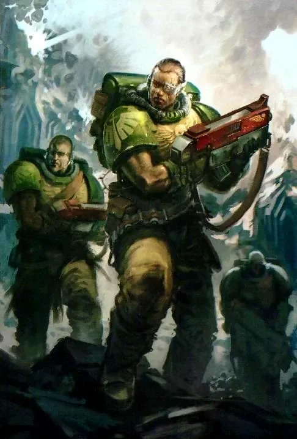
03อวัยวะเสริม 19 ชิ้น (และอีก 3 ชิ้นของ Primaris)
ฝังตามลำดับนี้เท่านั้น ยิ่งอายุมากยิ่งเสี่ยงตาย — Chapter ส่วนใหญ่เริ่มที่อายุ 10–14 ปี และทำได้ช้าสุดราว 18 ปี
ตัวเลขตรงกับลำดับการฝังในตารางด้านล่าง (+1 ถึง +3 คืออวัยวะเพิ่มของ Primaris) ส่วนสีเข้มรอบลำตัวคือ Black Carapace ที่ฝังใต้ผิวหนัง
- กระดูกที่แข็งด้วย Ossmodula และซี่โครงที่เชื่อมเป็นแผ่นเดียว
- หัวใจเดิม (ข้างหัวใจดวงที่สอง)
- Black Carapace ใต้ผิวลำตัว
- Sinew Coils ตามเส้นเอ็น (เฉพาะ Primaris)
| # | อวัยวะ | อายุที่ฝัง | หน้าที่ |
|---|---|---|---|
| 1 | Secondary Heart หัวใจดวงที่สอง | 10–14 | เพิ่มการสูบฉีดเลือด และทำงานแทนได้ถ้าหัวใจหลักหยุดเต้น |
| 2 | Ossmodula กระดูกเหล็ก | 10–14 | ทำให้กระดูกดูดซับแร่เซรามิกจนแข็งแรงผิดมนุษย์ สูงราว 2.1–2.3 เมตร และซี่โครงเชื่อมเป็นแผ่นเกราะชิ้นเดียว |
| 3 | Biscopea เตาหลอมพละกำลัง | 10–14 | เร่งการสร้างกล้ามเนื้อ และควบคุมฮอร์โมนของ Ossmodula (ฝังพร้อมกัน) |
| 4 | Haemastamen ผู้สร้างเลือด | 12–14 | ปรับเลือดให้ขนออกซิเจนได้ดีขึ้น เลือดจึงแดงสดกว่ามนุษย์ปกติ |
| 5 | Larraman's Organ ผู้รักษา | 12–14 | สร้างเซลล์ Larraman ที่ปิดบาดแผลในไม่กี่วินาที เลือดจึงไม่ไหลไม่หยุดและแผลไม่ติดเชื้อ |
| 6 | Catalepsean Node ผู้ไม่หลับ | 14–17 | ให้สมองซีกหนึ่งพักขณะอีกซีกตื่น จึงแทบไม่ต้องนอน (สถิติรบต่อเนื่อง 328 ชั่วโมง) |
| 7 | Preomnor ผู้ล้างพิษ | 14–16 | กระเพาะกรองพิษก่อนย่อย กินของที่มนุษย์กินไม่ได้และต้านยาพิษ |
| 8 | Omophagea ผู้จดจำ | 14–16 | ดูดซับความทรงจำจากเนื้อที่กิน — กินเนื้อสัตว์หรือศัตรูแล้วได้ข้อมูลของมัน |
| 9 | Multi-lung ปอดที่สาม | 14–16 | หายใจได้ในอากาศเบาบางหรือมีพิษ |
| 10 | Occulobe ดวงตาแห่งการแก้แค้น | 14–16 | สายตาคมขึ้นและมองเห็นในที่มืด |
| 11 | Lyman's Ear ผู้เฝ้ายาม | 14–16 | ไม่เวียนหัว ไม่เมารถ และกรองเสียงรบกวนหรือการโจมตีด้วยเสียงได้ |
| 12 | Sus-an Membrane ผู้จำศีล | 14–16 | เข้าสู่ภาวะจำศีลเมื่อบาดเจ็บสาหัสจนกว่าจะได้รับการรักษา (สถิติ 567 ปี) |
| 13 | Melanochrome ผิวต้านรังสี | 15–16 | ปรับเม็ดสีผิวให้ทนรังสีและความร้อน — ทำให้บาง Chapter มีสีผิวผิดปกติ |
| 14 | Oolitic Kidney ผู้ชำระล้าง | 15–16 | กรองพิษในเลือดร่วมกับ Preomnor (แต่ทำให้หมดสติระหว่างล้างพิษ) |
| 15 | Neuroglottis ผู้ลิ้มรส | 15–16 | ชิมหรือดมแล้วรู้ว่าสิ่งนั้นมีพิษหรือไม่ และตามรอยศัตรูด้วยกลิ่นได้ |
| 16 | Mucranoid ผู้ทอ | 16–18 | ขับสารคล้ายขี้ผึ้งเคลือบผิว ป้องกันความเย็นจัดและสุญญากาศ |
| 17 | Betcher's Gland เขี้ยวพิษ | 16–18 | เปลี่ยนน้ำลายเป็นกรดกัดกร่อนที่ทำให้ตาบอด |
| 18 | Progenoid Glands เมล็ดพันธุ์ | 16–18 | เก็บ gene-seed ไว้สร้าง Space Marine รุ่นต่อไป — อวัยวะที่สำคัญที่สุดต่อการอยู่รอดของ Chapter |
| 19 | Black Carapace ส่วนเชื่อมต่อ | 16–18 | แผ่นใต้ผิวหนังที่เชื่อมระบบประสาทกับชุดเกราะ Power Armour ให้เกราะขยับตามใจสั่ง |
ภาพประกอบจากหนังสือ: การฝังอวัยวะ
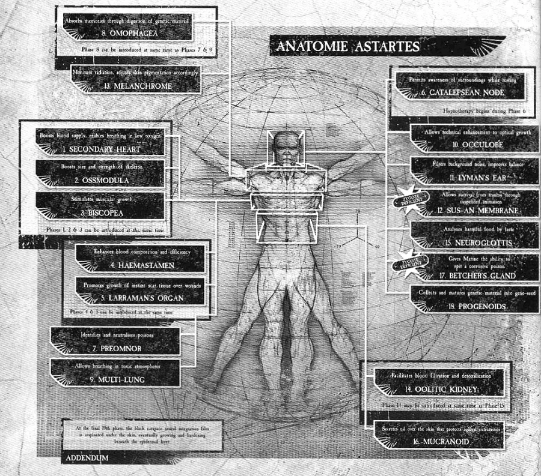
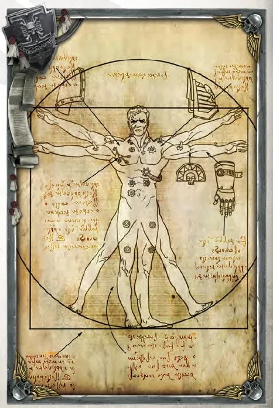
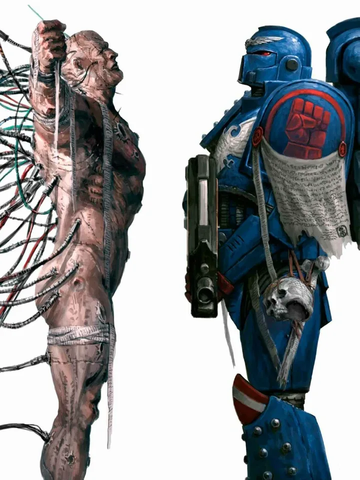
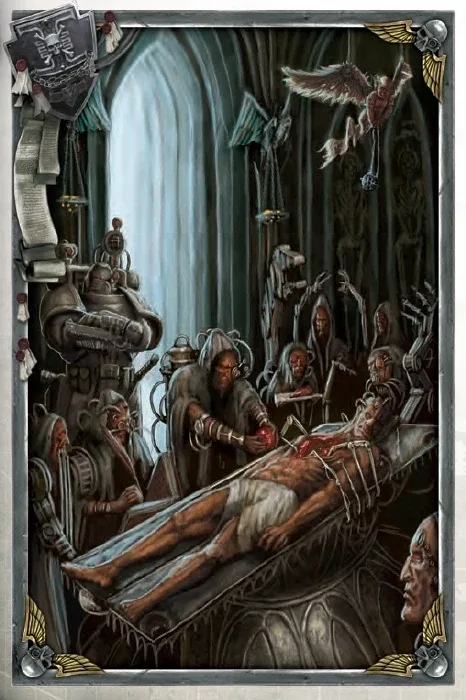
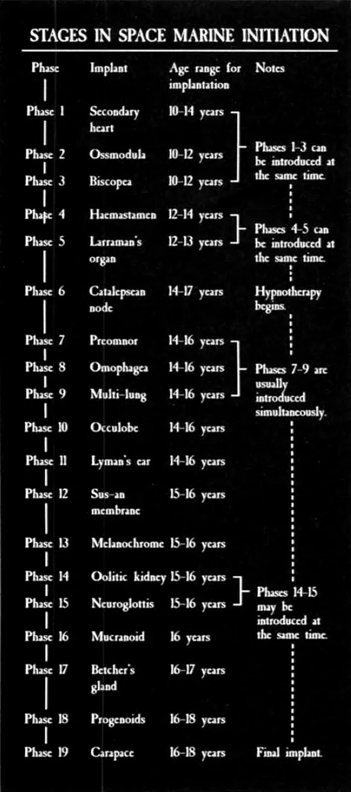
อวัยวะเพิ่มของ Primaris (รวม 22 ชิ้น)
Belisarius Cawl สร้างจากสารพันธุกรรมใน Sangprimus Portum ที่ Guilliman มอบให้ ฝังแทรกระหว่างขั้นที่ 3 และ 4 (เรียกว่าขั้น Primaris Alpha และ Beta) gene-seed ของ Primaris ยังเสถียรกว่ามาก โอกาสกลายพันธุ์ต่อรุ่นเพียง 0.001%
| # | อวัยวะ | หน้าที่ |
|---|---|---|
| +1 | Sinew Coils เส้นเอ็นเหล็ก | เส้นเอ็นเสริมด้วยขดลวดโลหะ แรงบีบมหาศาลและเป็นเกราะอีกชั้น |
| +2 | Magnificat ตัวขยาย | ต่อมในสมองที่เร่งการเติบโตและเพิ่มพลังอวัยวะอื่น — เป็นเพียงครึ่งหนึ่งของอวัยวะที่จักรพรรดิใช้สร้าง Primarch |
| +3 | Belisarian Furnace เตาแห่งชีวิต | ปล่อยสารกระตุ้นและเร่งการฟื้นตัวเมื่อบาดเจ็บหนัก แล้วต้องใช้เวลาสะสมใหม่ |
ได้ผ่านการผ่าตัดที่เรียกว่า Rubicon Primaris ซึ่งอันตรายมาก เช่น Marneus Calgar, Dante และ Azrael ผ่านมาแล้ว ดูตัวละครเหล่านี้ได้ที่ บุคคลสำคัญ
04ความต่างของแต่ละทัพ (ฝ่ายจักรวรรดิ)
gene-seed ของ Primarch แต่ละคนต่างกัน บางสายกลายพันธุ์จนอวัยวะบางชิ้นไม่ทำงาน หรือได้ลักษณะพิเศษมา
| Chapter | คัดคนจาก | ลักษณะพิเศษ / ข้อบกพร่อง | ธรรมเนียม |
|---|---|---|---|
| Ultramarines | ดาวทั้ง 500 ของ Ultramar ผ่านโรงเรียนทหารชั้นยอด | gene-seed บริสุทธิ์และมั่นคงที่สุด จึงมี Chapter สืบทอดมากที่สุด | ยึด Codex Astartes อย่างเคร่งครัดแต่ยืดหยุ่น |
| Dark Angels | เดิมจาก Caliban ปัจจุบันเป็น Chapter กองเรือ ฐานคือป้อม The Rock | ไม่มีข้อบกพร่องทางกายที่รู้กัน แต่แบกความลับเรื่อง Fallen Angels | มี Inner Circle ที่รู้ความลับ, Deathwing และ Ravenwing |
| White Scars | ชนเผ่าเร่ร่อนบนทุ่งหญ้าของ Chogoris | ไม่มีข้อบกพร่องสำคัญที่บันทึกไว้ | กรีดแผลเป็นบนใบหน้าเป็นพิธี และใช้มอเตอร์ไซค์มากกว่า Chapter อื่น |
| Space Wolves | นักรบจากชนเผ่าบน Fenris ที่ Wolf Priest คัดเลือก | Canis Helix ทำให้มีเขี้ยว ประสาทสัมผัสไวแบบหมาป่า ผู้ที่คุมไม่ได้กลายเป็น Wulfen | ไม่ทำตาม Codex แบ่งเป็น Great Company แทนกองร้อย |
| Imperial Fists | หลายดาว (Chapter กองเรือ ฐานคือยานป้อม Phalanx) | Betcher's Gland และ Sus-an Membrane ไม่ทำงาน | ฝึกความอดทนต่อความเจ็บปวดในห้อง Pain Glove |
| Blood Angels | ชนเผ่าบนดาวกัมมันตรังสี Baal Secundus | Red Thirst (กระหายเลือด) และ Black Rage (คลั่งเห็นภาพการตายของ Sanguinius) | รักศิลปะและความงาม ผู้ที่คลั่งจะเข้าหน่วย Death Company |
| Iron Hands | ดาว Medusa ที่โหดร้าย | เชื่อว่าเนื้อหนังอ่อนแอ จึงเปลี่ยนอวัยวะเป็นกลไกอย่างตั้งใจ | แบ่งเป็นกลุ่ม Clan นำโดย Iron Father |
| Salamanders | ชุมชนบนดาวภูเขาไฟ Nocturne | Melanochrome ทำให้ผิวดำสนิทและตาแดงเรือง | ใกล้ชิดกับประชาชนและปกป้องพลเรือนก่อนเสมอ |
| Raven Guard | เหมืองบนดวงจันทร์ Deliverance และดาวอื่น | ไม่มี Mucranoid และ Betcher's Gland ที่ทำงานได้ ผิวซีด ผมและตาดำ | ถนัดการซุ่มโจมตีแบบ 'โจมตีแล้วหายไป' |
| Black Templars | คัดจากดาวที่ผ่านระหว่างทำศึก (ไม่มีดาวประจำ) | สายเลือด Rogal Dorn (เหมือน Imperial Fists) | ไม่มีกองร้อย Scout: Neophyte ฝึกกับทหารรุ่นพี่โดยตรง และไม่มี Librarian |
| Grey Knights | ผู้มีพลังจิตทั่วจักรวรรดิที่ถูกคัดเลือกอย่างลับ | ทุกคนเป็นผู้มีพลังจิต จิตใจต้านทาน Chaos ได้เกือบสมบูรณ์ | Chapter ลับ ก่อตั้งโดย Malcador (อยู่ใต้ Ordo Malleus ของ Inquisition) |
| Deathwatch | ไม่คัดเอง — รับทหารผ่านศึกจาก Chapter อื่น | หลากหลายตามต้นสังกัด | ทาไหล่ข้างหนึ่งเป็นสีของ Chapter เดิม และกลับไปเมื่อครบวาระ (Long Vigil) |


05ฝ่าย Chaos: สมัยยังภักดี vs ปัจจุบัน
Legion ผู้ทรยศไม่ได้แบ่งเป็น Chapter และไม่มีดาวอังคารคอยผลิต gene-seed ให้ จึงต้องหาวิธีสร้างทหารเอง ทำให้แต่ละ Legion เปลี่ยนไปมาก
| Legion | ยุค 30K (ยังภักดี) | ยุค 40K (Chaos) |
|---|---|---|
| Emperor's Children (III) | เกือบสูญพันธุ์ตั้งแต่ต้นเพราะคลัง gene-seed ปนเปื้อน ฟื้นได้เมื่อพบ Fulgrim คัดคนจาก Chemos | หา gene-seed ใหม่จากการปล้น และ Fabius Bile ทดลองสร้างทหารเอง ร่างกายถูกปรับแต่งเพื่อความรู้สึกที่รุนแรง |
| Iron Warriors (IV) | ดาว Olympia — ใหญ่ราว 180,000 นายก่อน Heresy | ลักพาตัวและเจเนซีดจากป้อมที่ยึดได้ เช่นศึก Hydra Cordatus ที่บุกเพื่อชิง gene-seed |
| Night Lords (VIII) | คนจากโลกอาชญากรรม Nostramo | จับคนจากดาวที่ปล้น ไม่มีดาวบ้านเกิดแล้ว (Nostramo ถูก Curze ทำลาย) |
| World Eaters (XII) | เดิมชื่อ War Hounds ทุกคนถูกฝัง Butcher's Nails ตาม Angron | ใครก็ได้ที่ทนการฝัง Butcher's Nails — แต่ความคลั่งทำให้ทหารตายเร็วมาก |
| Death Guard (XIV) | ดาวพิษ Barbarus — ราว 95,000 นายก่อน Heresy | ความเน่าของ Nurgle ทำให้เกือบฆ่าไม่ตาย ต้องการทหารใหม่น้อยกว่า Legion อื่น |
| Thousand Sons (XV) | คัดผู้มีพลังจิตจาก Prospero — ราว 80,000–90,000 นาย | ทหารส่วนใหญ่กลายเป็นฝุ่นในเกราะ (Rubric) สมาชิกใหม่มีเพียง Sorcerer ส่วนน้อย |
| Sons of Horus → Black Legion (XVI) | เดิม Luna Wolves คัดจาก Cthonia | รับผู้ทรยศจากทุก Legion และ Chapter เข้ามา จึงเป็นกองทัพ Chaos Space Marine ที่ใหญ่ที่สุด |
| Word Bearers (XVII) | ดาวศาสนา Colchis — ราว 100,000 นายก่อน Heresy | ใช้ลัทธิ Chaos บนดาวต่าง ๆ เป็นแหล่งคัดคน |
| Alpha Legion (XX) | ไม่มีบันทึกดาวบ้านเกิดชัดเจน อย่างน้อย 50,000 นายที่ Isstvan V | คัดคนผ่านเครือข่ายลัทธิลับในจักรวรรดิ และแทบไม่กลายพันธุ์ |
ตัวเลขจำนวนทหารยุค 30K มาจากประมาณการในแหล่งทางการ ซึ่งบางแหล่งให้ตัวเลขต่างกัน
06ตอนนี้มี Space Marine เหลือเท่าไร?
Legion: หลายหมื่นถึงหลายแสนนาย
- แต่ละ Legion ตอนออกจาก Terra มีอย่างน้อย 100,000 นาย
- Ultramarines ใหญ่ที่สุดราว 250,000 นาย
- Iron Warriors ราว 180,000 · Word Bearers ราว 100,000 · Death Guard ราว 95,000
- Thousand Sons ราว 80,000–90,000 ก่อน Prospero · Alpha Legion อย่างน้อย 50,000 ที่ Isstvan V
Chapter: ราว 1,000 นายต่อ Chapter
- Codex Astartes กำหนดให้แต่ละ Chapter มีประมาณ 1,000 นาย (10 กองร้อย × 100)
- ทั้งจักรวรรดิมีราว 1,000 Chapter — Space Marine ทั้งหมดจึงมีเพียงหลักล้านนาย ท่ามกลางมนุษย์นับล้านล้านคน
- บาง Chapter ไม่ทำตาม Codex เช่น Space Wolves และ Black Templars ซึ่งเชื่อว่ามีมากกว่า 1,000 แต่ไม่มีตัวเลขทางการ
- Grey Knights ก่อตั้งด้วยสมาชิก 1,000 นาย
- หลัง Ultima Founding กองทัพ Primaris จำนวนมหาศาลเข้ามาเสริม หลาย Chapter จึงกลับมาครบหรือเกินกำลังเดิม
Games Workshop แทบไม่ให้ตัวเลขทางการของแต่ละ Chapter ในยุค 40K เว็บนี้จึงใส่เฉพาะตัวเลขที่มีแหล่งอ้างอิง และระบุว่า 'ไม่มีตัวเลขทางการ' ในกรณีที่เหลือ
07ชุดเกราะ Power Armour ทุกรุ่น (Mark I – X)
แต่ละรุ่นไม่ได้มาจากการประดิษฐ์ใหม่ แต่มาจากการค้นพบเทคโนโลยีเก่าระหว่าง Great Crusade — หลัง Heresy เทคโนโลยีแทบหยุดพัฒนา จนเกราะใหม่ชุดแรก (Mark VIII) เพิ่งมีในสหัสวรรษที่ 41 ส่วน Mark IX ไม่มีข้อมูลในแหล่งทางการ

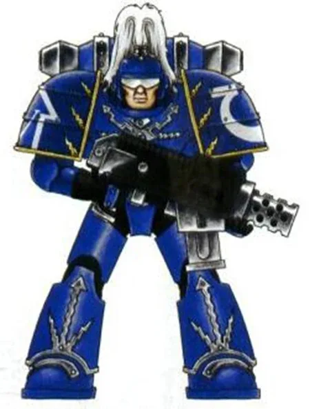
Mark I · Thunder
Unification Wars บน Terra (ปลาย M30)
ข้อดี: ส่วนบนมีกำลังมหาศาล เหมาะกับการรบระยะประชิด
ข้อเสีย: ไม่ปิดผนึก ใช้ในอวกาศไม่ได้ ขาไม่มีพลังงาน และเสียงดัง
ยุค 40K: แทบไม่มีเหลือ
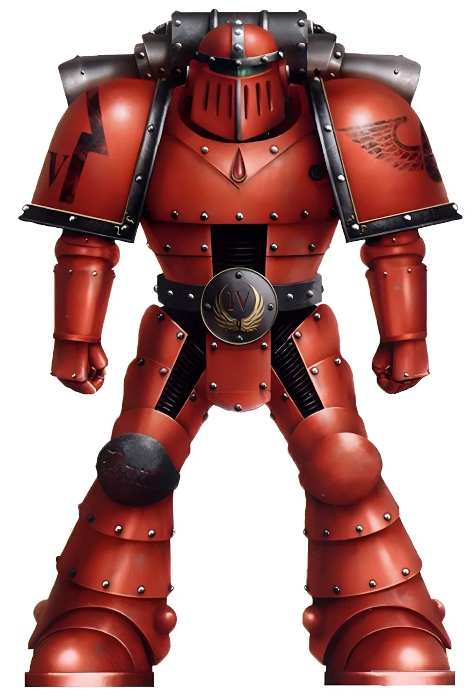
Mark II · Crusade
ช่วงเริ่ม Great Crusade (หลัง 798.M30) ผลิตบนดาวอังคาร
ข้อดี: เกราะปิดผนึกชุดแรก มีระบบช่วยชีวิตและ auto-senses ขยับคล่องที่สุด หลายคนมองว่าดีที่สุดที่เคยสร้าง
ข้อเสีย: ทำจากวงแหวนเซรามิกเล็ก ๆ ซ่อมยากมาก
ยุค 40K: ของศักดิ์สิทธิ์ ใช้ในพิธีหรือมอบให้แชมป์ของ Chapter

Mark III · Iron
Great Crusade — สร้างเพื่อบุกยานและอุโมงค์
ข้อดี: เกราะหน้าหนามาก เหมาะกับการบุกตรง ๆ ในที่แคบ
ข้อเสีย: ด้านหลังบาง หนัก และเสียงดัง ไม่เหมาะกับการรบทั่วไป
ยุค 40K: ของศักดิ์สิทธิ์ใช้ในพิธี
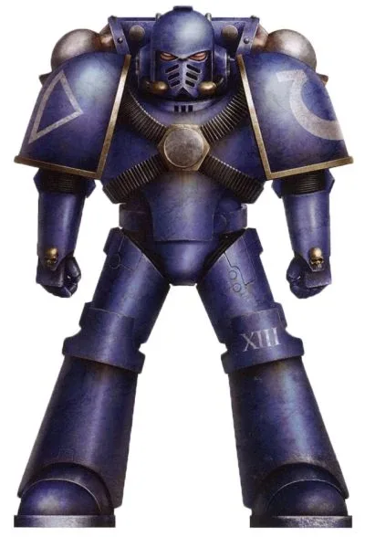
Mark IV · Maximus
ปลาย Great Crusade (ต้น M31) — ยุครุ่งเรืองที่สุด
ข้อดี: เบากว่า คล่องกว่า ผลิตง่ายขึ้น หมวกหมุนตามศีรษะได้เป็นครั้งแรก
ข้อเสีย: เทคโนโลยีสูงจนซ่อมยากในสนามรบช่วง Heresy และแจกจ่ายยังไม่ครบตอนสงครามเริ่ม
ยุค 40K: หายาก
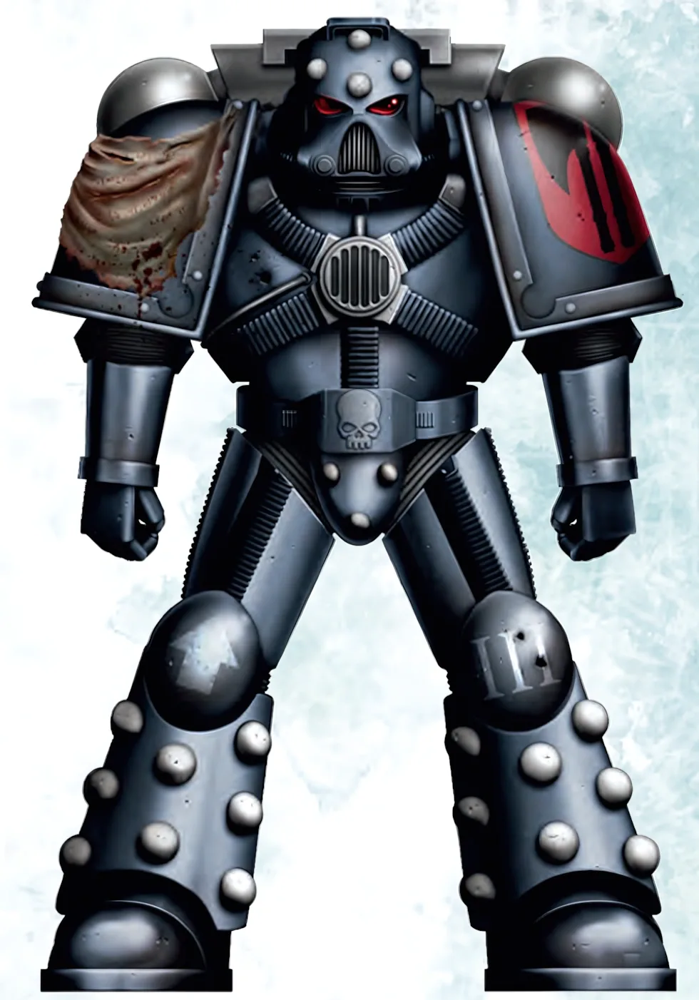
Mark V · Heresy
ระหว่าง Horus Heresy — ช่างของแต่ละ Legion ประกอบเองในสนาม
ข้อดี: ซ่อมได้ด้วยวัสดุอะไรก็ได้ มีหมุดยึดเป็นเอกลักษณ์
ข้อเสีย: หนัก ร้อนเกินง่าย และมีจุดอ่อนที่สายไฟเก่า
ยุค 40K: Chapter ผู้ภักดีแยกชิ้นส่วนไปใช้เกือบหมด แต่ยังพบมากในฝ่าย Chaos จน Inquisition มักระแวงผู้สวม

Mark VI · Corvus
ทดสอบกับ Raven Guard ก่อน Heresy และผลิตเต็มรูปแบบไม่กี่เดือนก่อนสงครามเริ่ม
ข้อดี: เบาที่สุดและข้อต่อลื่นที่สุด ซ่อมง่ายด้วยวงจรสำรอง หมวกทรงจะงอยปาก
ข้อเสีย: สายไฟที่หน้าอกยังอยู่นอกเกราะ — จุดอ่อนเดียวที่สำคัญ
ยุค 40K: ยังใช้กันทั่วไป มักจับคู่กับ Jump Pack
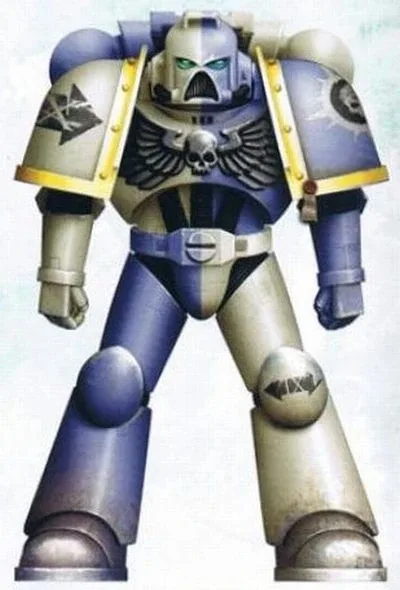
Mark VII · Aquila
ช่วงท้าย Heresy บน Terra ระหว่างการปิดล้อม
ข้อดี: แผ่นอกหนาปิดสายไฟ ใช้ชิ้นส่วนร่วมกับ Mark VI ได้ มีนกอินทรี Aquila ที่อก
ข้อเสีย: คอเป็นจุดที่กระสุนเด้งจากอกเข้าไปได้ และสายไฟบางส่วนยังเปิดอยู่
ยุค 40K: แบบที่พบมากที่สุดในหมู่ Firstborn
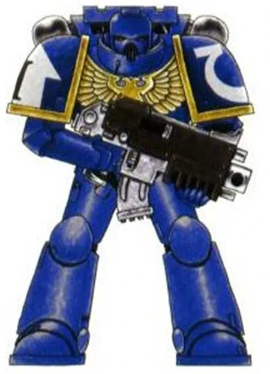
Mark VIII · Errant
สหัสวรรษที่ 41 — เกราะใหม่ชุดแรกหลังหมื่นปี
ข้อดี: ปิดสายไฟทั้งหมด เพิ่มปลอกคอสูงกันกระสุนเข้าคอ
ข้อเสีย: หายาก และหมวกรุ่นเก่าใส่ร่วมไม่ได้ถ้าไม่ดัดแปลง
ยุค 40K: ส่วนใหญ่แจกให้จ่าและนายทหาร
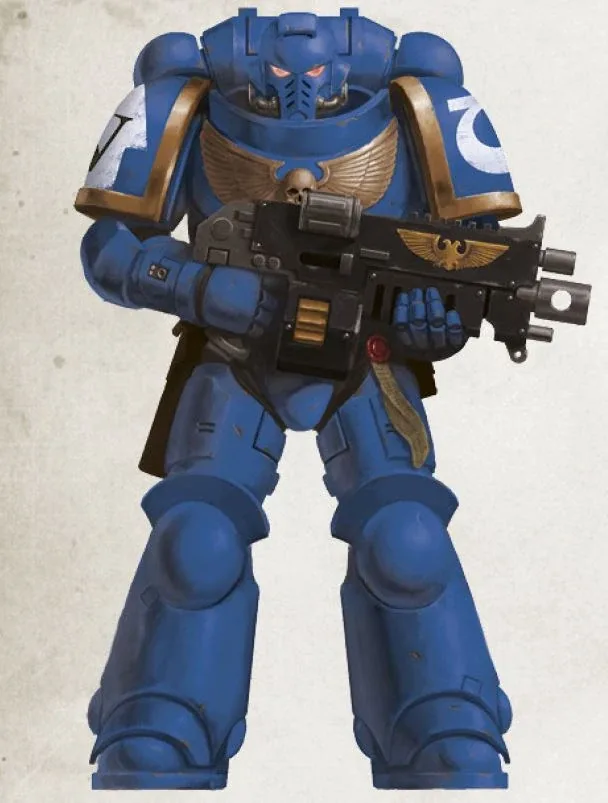
Mark X · Tacticus / Phobos / Gravis
Era Indomitus — สร้างคู่กับ Primaris Marines
ข้อดี: ปรับแต่งเป็นชุดย่อยได้: Tacticus ทั่วไป, Phobos เงียบและเบา, Gravis หนาทนไฟหนัก
ข้อเสีย: ใช้ได้เฉพาะร่าง Primaris ที่ใหญ่กว่า Firstborn
ยุค 40K: เกราะหลักของ Primaris ทุกคน
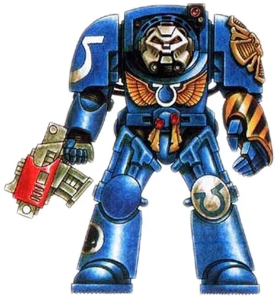
Terminator (Tactical Dreadnought Armour)
ยุค 30K (Cataphractii, Tartaros) และ Indomitus Pattern ในยุค 40K
ข้อดี: เกราะที่หนาที่สุดที่คนสวมได้ ทนทานมากและเทเลพอร์ตลงสนามได้
ข้อเสีย: ช้าและหายาก ให้เฉพาะทหารผ่านศึกระดับสูง (มักอยู่ใน 1st Company)
ยุค 40K: ของล้ำค่า มีจำนวนจำกัดในแต่ละ Chapter

Artificer Armour
ทุกยุค — ช่างทำด้วยมือทีละชุด
ข้อดี: ป้องกันดีที่สุดในชุดเกราะขนาดปกติ และตกแต่งประณีต
ข้อเสีย: หายากมาก สร้างนาน
ยุค 40K: มอบให้วีรบุรุษและนายทหาร
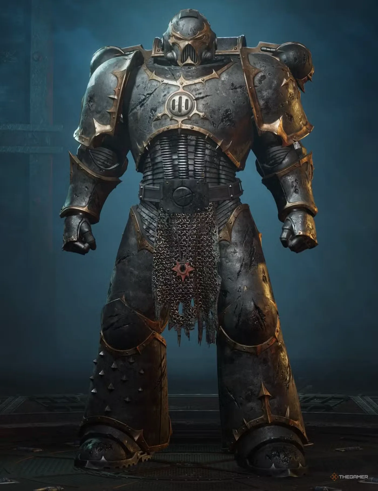
Chaos Power Armour
เกราะเก่ายุค Heresy ที่ถูกพลัง Warp แทรกซึม
ข้อดี: บางชุดซ่อมตัวเองหรือมีพลังปีศาจช่วยป้องกัน
ข้อเสีย: เกราะและผู้สวมกลายพันธุ์หลอมรวมกัน ซ่อมตามปกติไม่ได้
ยุค 40K: ใช้ในฝ่าย Chaos Space Marines
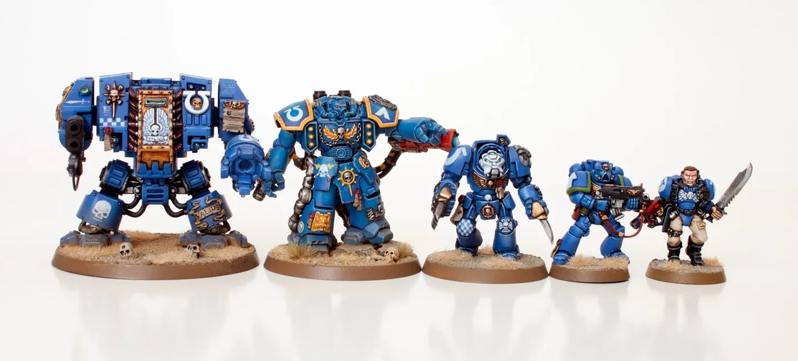
08Dreadnought ของทุกฝ่าย
Dreadnought คือโลงศพเดินได้ — ทหารที่บาดเจ็บจนเกินรักษาถูกบรรจุไว้ข้างในเพื่อรบต่อ การได้เข้าไปอยู่ใน Dreadnought ถือเป็นเกียรติสูงสุด แต่ก็หมายถึงการไม่ได้ตายอย่างสงบ
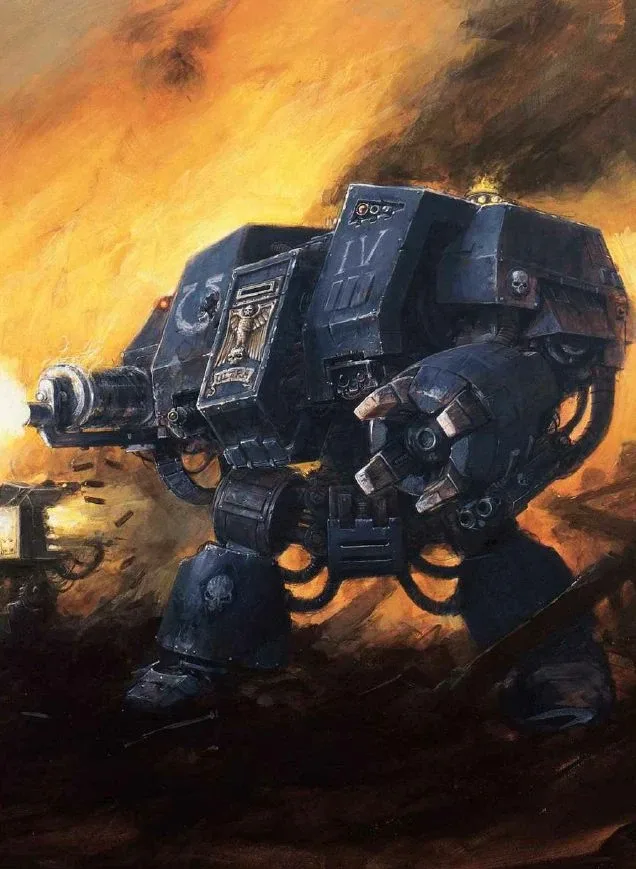
Castraferrum Dreadnought
Dreadnought มาตรฐานของ Firstborn ข้างในคือทหารที่บาดเจ็บจนร่างกายใช้การไม่ได้ ถูกบรรจุในโลงกลไกเพื่อสู้ต่อ ติดอาวุธหนักได้หลากหลาย
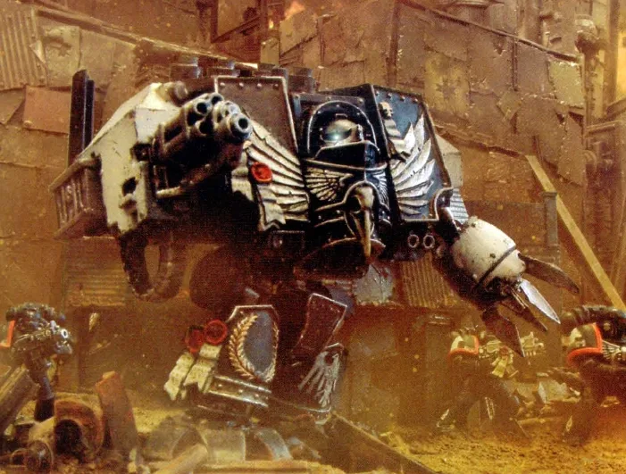
Venerable Dreadnought
Dreadnought ที่อยู่มานานหลายร้อยหรือหลายพันปี เป็นทั้งนักรบและที่ปรึกษาของ Chapter หลายตัวเคยรบในศึกที่กลายเป็นตำนานไปแล้ว
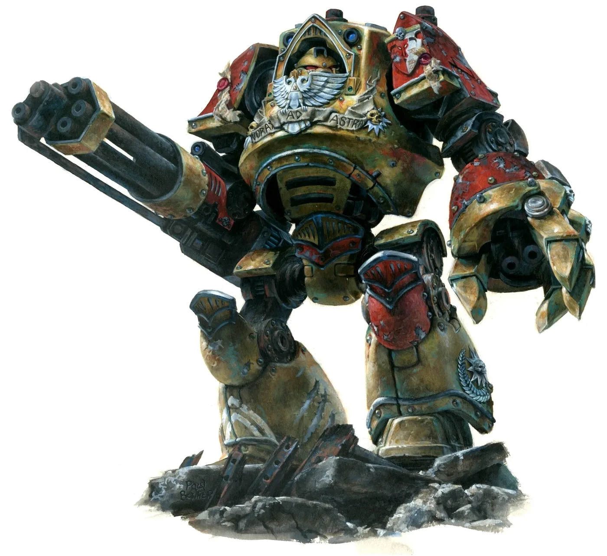
Contemptor Dreadnought
เทคโนโลยียุคทอง ใหญ่และคล่องกว่า Dreadnought ยุคหลัง มีโล่พลังงาน ปัจจุบันเหลือน้อยมาก
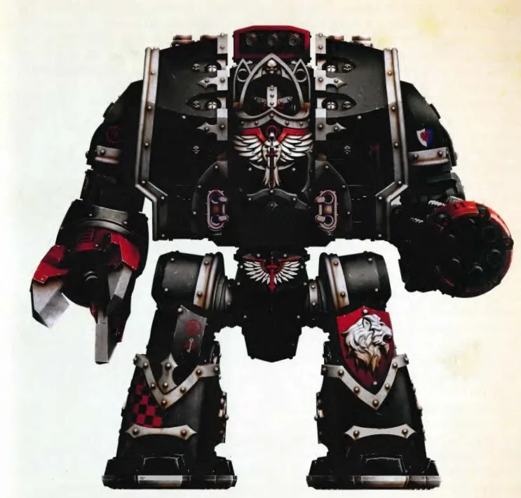
Leviathan Siege Dreadnought
Dreadnought สำหรับบุกป้อม สร้างอย่างลับบน Terra ปลาย Great Crusade ตัวใหญ่ เกราะหนา ทำลายอาคารและยานได้
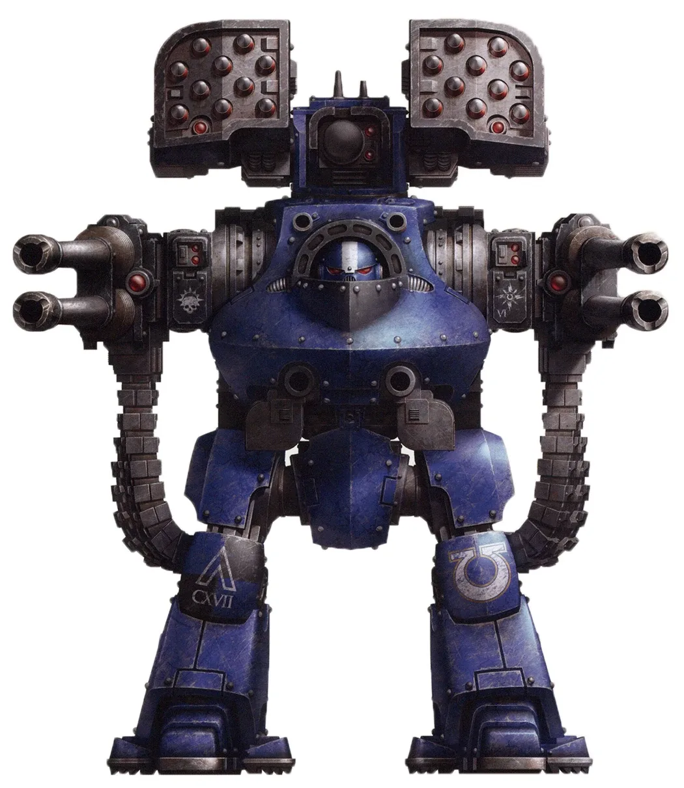
Deredeo Dreadnought
Dreadnought ยิงสนับสนุนระยะไกล ติดปืนใหญ่คู่และระบบต่อต้านอากาศยาน
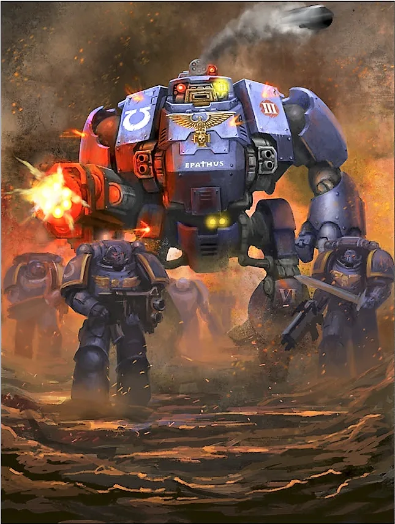
Redemptor / Brutalis / Ballistus
Dreadnought ของ Primaris ใหญ่ที่สุดเท่าที่ Space Marine เคยใช้ — Redemptor สายทั่วไป, Brutalis สายตะลุมบอน, Ballistus สายยิงระยะไกล
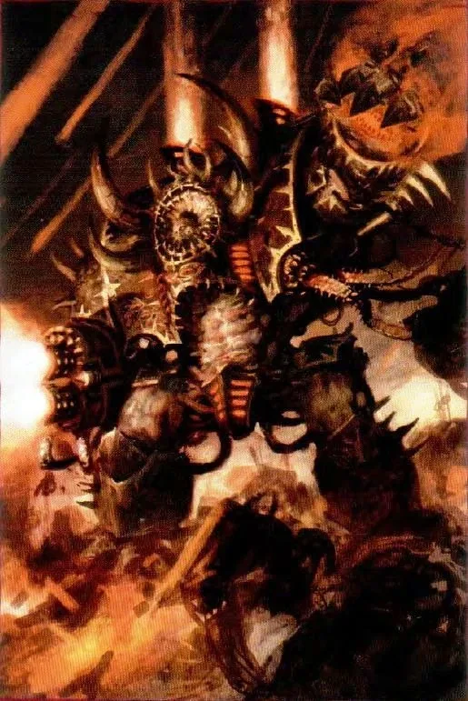
Helbrute
Dreadnought ของ Chaos ที่ทหารข้างในคลั่งจากการถูกขังนับพันปี พลังยิงเทียบรถถังเล็กแต่ควบคุมยาก หลายตัวถูกล่ามโซ่ก่อนปล่อยออกรบ
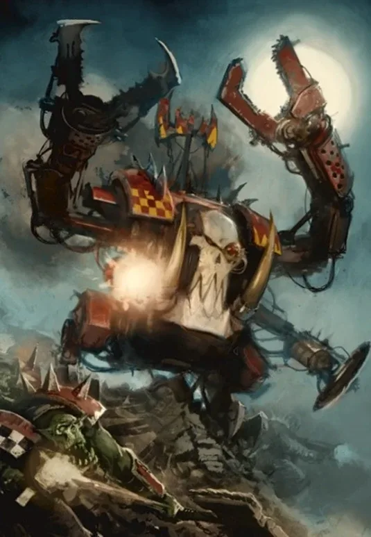
Deff Dread
Dreadnought ฉบับ Orks ต้องใช้ทั้งช่าง Mek และหมอ Painboy ต่อสายเข้ากับคนขับ Ork หลายตัวอยากถูกยัดใส่เพราะจะได้เป็น Ork ตัวใหญ่
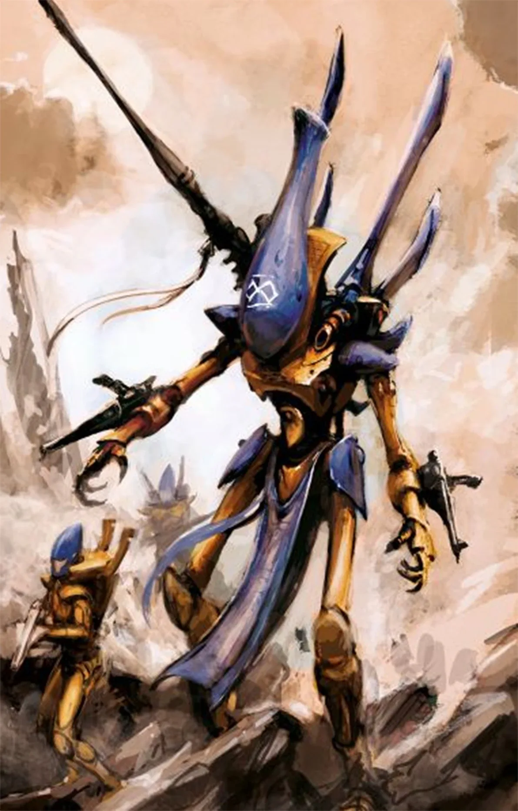
Wraithlord
ยักษ์ Wraithbone ของ Aeldari ข้างในไม่มีคน มีแต่วิญญาณของวีรบุรุษที่ตายแล้วควบคุม จักรวรรดิเรียกว่า 'Eldar Dreadnought'
09Black Shields และ Blackshields
Blackshields ยุค Heresy
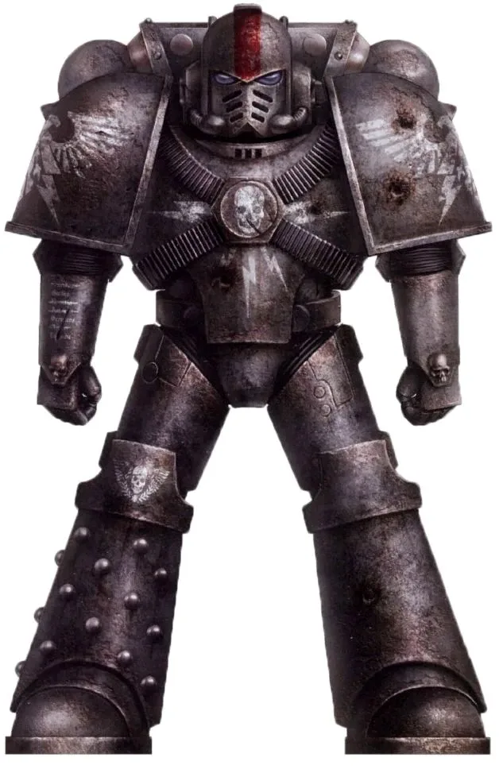
คำเรียกรวมทหาร Space Marine ที่ไม่มีสังกัดชัดเจนในยุค Horus Heresy บ้างหนีจาก Legion ที่ทรยศ บ้างเป็นโจร หรือไม่รู้ว่าอยู่ฝ่ายไหน มักทาเกราะทับตราเดิมเป็นสีดำ จึงถูกทั้งสองฝ่ายระแวง
Black Shields ของ Deathwatch
Space Marine ที่ตัดขาดจาก Chapter เดิมโดยสมัครใจ ลบตราทุกอย่างแล้วขอเข้า Deathwatch เรื่องราวที่พูดกับ Watch Commander เป็นความลับตลอดไป บางคนอาจหนีจากความผิด บางคนอาจมาจาก Chapter ที่ถูกลบ